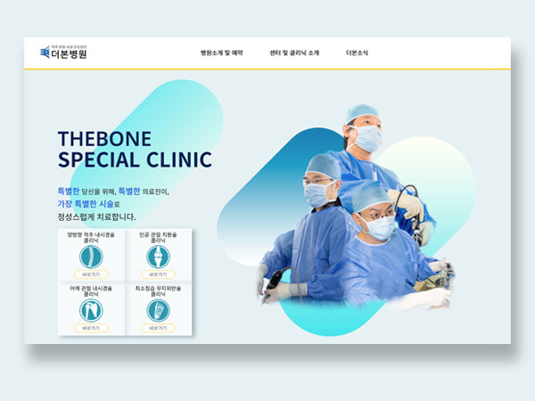

더본병원 - 스페셜클리닉
더본병원의 특성화된 수술을 홍보하기 위해 만든 페이지 입니다

Key Features
- 각 질환별 담당의를 홍보하기 위해 메인에 배치하였습니다.
- 차별점을 강조하기 위해 최신 수술기술(최소침습, 양방향 척추 내시경)을 강조하였습니다.
- 실제 수술 전후 x-ray비교 이미지를 넣어 환자의 신뢰높였습니다.
더본병원의 특성화된 수술을 홍보하기 위해 만든 페이지 입니다